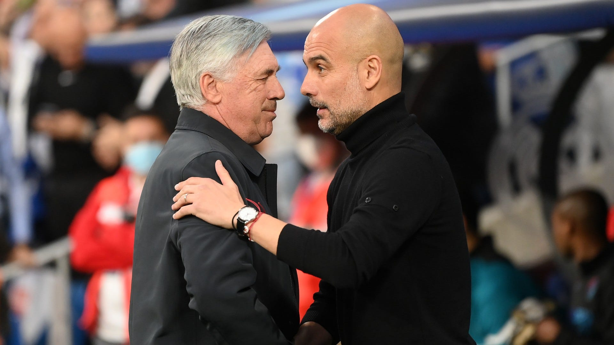

Explorar
Em meio a uma crise dentro e fora de campo no PSG, o técnico Christophe Galtier acabou se tornando um
País Fut
As equipes comandadas por Carlo Ancelotti e Pep Guardiola voltam a se enfrentar na mesma fase em que
País Fut
O jornal ainda indica que o presidente do Real Madrid, Florentino Pérez, está disposto a abrir as portas do